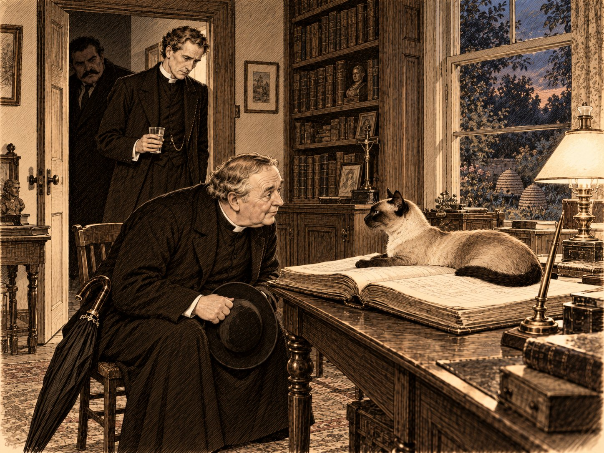

День мира

Если смотреть на Фены из окна автомобиля, кажется, что Господь, создавая эту часть Англии, нарочно убрал всё лишнее, чтобы ничто не мешало небу. Земли здесь ровно столько, сколько нужно, чтобы было на чём стоять; всё остальное — небо, огромное, как в первый день творения, и в тот июльский вечер ещё и серое, как будто его забыли покрасить. Фенами зовут осушенную болотную равнину к востоку от Стамфорда, и дорога через неё идёт прямо, как линейка, потому что объезжать здесь нечего. По этой дороге, распугивая гусей и обгоняя единственную на всю округу телегу, летел большой открытый автомобиль, и за рулём его сидел человек такого роста, что автомобиль рядом с ним казался детской коляской.
Человек этот когда-то был самым знаменитым вором Франции, потом частным сыщиком в Лондоне — настолько частным, что о нём мало кто знал, а теперь, по его собственным словам, был просто Фламбо. Машину он вёл так, как прежде уходил от погони, — весело, широко и с полной уверенностью, что дорога отступит перед ним, как полицейские. Рядом с ним, глубоко утонув в сиденье, спал маленький священник с круглым лицом. Он раскрыл над собой огромный чёрный зонт — не от дождя, которого не было, а от ветра, который был, — и зонт, вывернутый встречным воздухом, хлопал над ним, как парус над утопленником. Шляпу священник держал на коленях обеими руками, словно котёнка, которого везут в новый дом.
Отец Браун проснулся у поворота на Сент-Гатлак, когда Фламбо сбросил скорость перед мостиком через канал. Он сложил зонт, надел шляпу и вынул из кармана письмо, которое читал в поезде до Питерборо уже трижды. Письмо было короткое, почерк в нём был быстрый и прямой, и писавшая явно не привыкла тратить слова.
«Дорогой отец Браун, — писала миссис Морс. — Вы, наверное, не помните, что обещали приехать, когда будет нужно, а я помню. Теперь нужно. Мой муж не пьёт и не смеётся. Я не знаю, что из этого страшнее, и не знаю, кому ещё сказать, потому что для всех в приходе это добродетель. Девятнадцатого в Стамфорде праздник мира. Приезжайте на праздник, тогда никто не спросит зачем. Агнес Морс».
— Обещал, — сказал отец Браун вслух, складывая письмо. — В Саутминстере, на платформе. Я сказал, что приеду, когда будет нужно, и думал, что это вежливость. Оказывается, это было обещание. С обещаниями так часто бывает: их дают, когда думают, что говорят любезность.
— Вы мне так и не сказали, что в письме, — заметил Фламбо.
— Там сказано, что викарий три года ведёт себя безупречно, — ответил священник. — Это очень дурной знак.
Дом викария стоял за церковью, низкий, длинный, с крышей, которая прогнулась посередине, как спина у старой лошади. Едва автомобиль остановился у калитки, из-за угла вылетело что-то огромное, песочное и неуклюжее, на четырёх лапах, которые явно были ему пока велики, и с разбегу поставило передние лапы Фламбо на грудь. Фламбо, который в своё время не дрогнул перед тремя жандармами разом, покачнулся. За собакой бежал мальчик лет девяти, в чулках, сползших на башмаки, и кричал «Ферокс, назад!» тем голосом, каким кричат собаке, заранее зная, что она не послушается.
— Какой молодой мастиф, — сказал отец Браун, разглядывая морду, складчатую и озабоченную, как у городского советника. — Как его зовут?
— Ферокс, — ответила с крыльца миссис Морс. — Других у нас не бывает. Старый умер позапрошлой зимой, а этот был тогда вот такой, — она показала руками что-то размером с грелку. — Никто не помнит, почему Ферокс. Так звали собаку у деда мужа и у прадеда, а кошек у нас всегда зовут Пами, и тоже неизвестно почему. Здравствуйте, отец Браун. Здравствуйте, мистер Фламбо. Сирил, сними с мистера Фламбо собаку.
Она почти не изменилась с той осени в Эссексе: та же прямая спина, тот же быстрый взгляд, только в волосах появилось серое, а у рта — складка, какая бывает у людей, которые долго держали что-то тяжёлое и не позволяли себе его поставить. Она пожала Брауну руку крепко, как мужчина, и задержала её на секунду дольше, чем требовала вежливость. Это и было то, чего не было в письме.
Потом из дома вышел викарий.
Отец Браун видел его один раз, восемь лет назад, у колыбели, в кухне эссекской фермы, и запомнил высокого худого человека с длинным бритым лицом, который смеялся так, что гуси за дверью отвечали ему. Человек, который вышел теперь на крыльцо, был так же высок и ещё худее; волнистые каштановые волосы на висках стали совсем седыми, и лицо стало длиннее, как будто его вытянуло что-то изнутри. Он улыбнулся, пожал руки, сказал всё, что следовало сказать, — и сказал хорошо. Отцу Брауну пришло в голову, что так выглядит дом, из которого вынесли мебель, но оставили занавески: снаружи всё на месте, и всё-таки ясно, что внутри никто не живёт.
— Рад вас видеть, — сказал викарий. — Очень рад. Агнес сказала, что вы приедете на праздник.
— Я приехал на праздник, — согласился отец Браун.
⁂
Пока миссис Морс вела Фламбо наверх, показывая ему комнату, где он мог бы стоять, не задевая головой балки, отец Браун остался в кабинете один. Кабинет был тот самый, о котором он слышал: книги до потолка, стол у окна, за окном сад и в саду ульи — несколько соломенных, похожих на шляпы великанов, и один деревянный, белый, похожий на маленький дом. На столе лежала раскрытая большая книга в потёртом кожаном переплёте — приходская книга, куда записывают крещения, браки и похороны. А на книге лежал кот.
Отец Браун снял шляпу, как снимают её, входя в комнату, где кто-то уже есть, и сел на стул напротив.
Кот был старый — это отец Браун понял сразу, ещё не умея сказать почему; старость у кошек видна не в шерсти, а в том, как они лежат, словно знают, что вставать придётся ещё много раз и спешить незачем. Он был длинный, сухой, с узкой треугольной головой, и окраска его была такая, какой отец Браун не видел ни у одного кота в Англии. Морда была тёмно-шоколадная, будто кот когда-то сунул её в кофейник, остался доволен и решил не умываться. Такими же тёмными были уши, словно их опалили у свечи. Зато шея и грудь были кремово-белые, чистые, как свежее бельё, а спина и бока — цвета тёплого кофе с молоком, к хвосту темнее, к животу светлее, без единого пятна, как будто его красили не кистью, а дыханием. Глаза у кота были светло-голубые, прозрачные, как фенское небо в марте, когда оно ещё не решило, быть ли ему весенним.
Но поразили отца Брауна не цвета, а взгляд. Обычная кошка смотрит на человека так, будто видит его сквозь сон и считает его не совсем настоящим. Этот кот смотрел прямо, внимательно и терпеливо, не мигая и не отводя глаз, и в его взгляде не было ни угрозы, ни любопытства — только ожидание.
— Вы смотрите, как хороший исповедник, — сказал ему отец Браун. — Не торопите и ждёте, пока человек скажет сам. Я бы взял вас в Лондон, но вы, кажется, нужнее здесь.
Кот открыл рот и сказал что-то длинное и требовательное, низким скрипучим голосом, совсем не похожим на мяуканье, — так, словно возражал на проповедь. Потом замолчал и снова стал ждать.
— Совершенно верно, — серьёзно согласился отец Браун. — Простите. Я не имел права так говорить, не выслушав другую сторону. А у вас, между прочим, воротничок, и почище нашего.
— Он с вами разговаривает? — спросила миссис Морс, входя с лампой. — Он разговаривает со всеми, кого признаёт. С епископом не разговаривал. Это Пами. Ему скоро двадцать лет.
— Я никогда не видел такого кота, — сказал отец Браун.
— В Англии их немного. Это сиамская порода; говорят, в Сиаме таких держат при дворе и при храмах. Когда Томми было года три, Эмброузу прислал его котёнком в корзинке оксфордский товарищ, который служил капелланом в Бангкоке. Котёнок проехал полсвета и в Тилбери вышел из корзинки так, будто это его встречают. Сирилу мы говорим, что Пами — бывший сиамский принц и сослан к нам за вольнодумство. Сирил верит. Мне иногда тоже кажется, что это правда.
Кот перевёл на неё голубые глаза, сказал что-то короткое и закрыл их.
— Он всегда спит на книге, — продолжала миссис Морс, ставя лампу. — Раньше Эмброуз его сгонял, потому что книгу надо было заполнять. Теперь не сгоняет. Он вообще, — она запнулась и договорила ровно, — теперь никого не сгоняет.
Отец Браун посмотрел на стол. Рядом с книгой, на медной подставке для перьев, лежало бронзовое стило с греческим словом — то самое, лунную сигму которого он когда-то учился отличать от прямой. Оно лежало аккуратно, как в музее.
— Его вернули после суда, — сказала миссис Морс, проследив его взгляд. — Раньше Эмброуз вертел его в пальцах, когда думал. Я не видела, чтобы он брал его в руки, с позапрошлого лета.
⁂
За ужином викарий сам налил гостям пива из коричневого кувшина — хорошего тёмного пива, которое варили в «Плуге», — а себе налил воды. Сделал он это так просто и естественно, что Фламбо ничего не заметил. Отец Браун заметил, но промолчал, а миссис Морс посмотрела на отца Брауна поверх подсвечника, и он понял, что этот взгляд она приготовила заранее.
Говорили о празднике. Викарий рассказывал, что в Стамфорде будут колокола с семи утра, оркестр, молебен у богадельни на Брод-стрит, чай для всех школьников в парке, крикет и вечером костёр, такой, что его увидят с соседних холмов, а там, говорят, зажгут свои, и так по всей Англии, от холма к холму, как во времена Армады. Говорил он хорошо, ясно и вполне любезно, и отцу Брауну казалось, что он слушает очень хороший перевод с языка, которого больше никто не знает.
Фламбо, которого пиво сделало ещё больше, чем он был, взялся рассказывать о своём прошлом. Он рассказал, как однажды, в молодые и грешные годы, угнал из Парижа четвёрку лошадей вместе с каретой лорд-мэра Лондона, приехавшего с визитом к президенту республики, довёз её до Кале, погрузил на рыбачью шхуну и вернул в Лондон к Сити раньше, чем сам лорд-мэр, так что тот, выйдя на вокзале, увидел свою карету, ожидающую его как ни в чём не бывало, и до конца жизни считал, что французы — самая услужливая нация в мире. История была великолепная и от первого до последнего слова выдуманная; Фламбо сочинил её на ходу и сам удивлялся ей, как фокусник, который вынул из шляпы не того кролика.
Сирил хохотал так, что подавился хлебом. Миссис Морс улыбалась краем рта. Викарий выслушал всё вежливо и внимательно и сказал:
— Удивительно. Никогда бы не подумал, что лошадей так легко перевозить морем.
Фламбо взглянул на него с изумлением, потом на отца Брауна. Отец Браун смотрел в свою кружку.
Человек, который сорок лет слышал фальшивую ноту в хоре из двадцати голосов, не услышал её в голосе, который фальшивил нарочно и во всю силу, как духовой оркестр.
⁂
Поздно вечером, когда в доме погасили лампы, отец Браун сказал, что хотел бы пройтись, и Фламбо пошёл с ним, потому что большие люди не любят рано ложиться в маленьких комнатах. Ночь была прохладная и сырая, совсем не июльская; над Фенами висели низкие облака, и только на западе, над Стамфордом, оставалась бледная полоса. «Плуг» стоял на краю деревни, у дороги, и в нём ещё горел свет.
Внутри было тепло, низко и тесно. Над стойкой, на крюках, вбитых в балку, висели кружки завсегдатаев — оловянные, глиняные, одна даже фарфоровая, с портретом королевы Виктории, — потому что в деревенском трактире у постоянного гостя есть своя кружка, как в церкви у постоянного прихожанина своя скамья. Хозяин, широкий человек с красными руками, налил гостям пива, узнав в одном из них католического священника и решив, судя по лицу, не делать из этого выводов.
Отец Браун долго смотрел на кружки. Все они блестели, потому что их снимали, наливали, мыли и вешали обратно каждый вечер. Одна, большая оловянная, с вмятиной на боку, висела в самом конце балки и не блестела совсем: на ней лежала серая пыль, ровная и толстая, какую оставляет не неделя, а годы.
— Чья это? — спросил отец Браун.
Хозяин посмотрел туда, куда смотрел священник, и лицо у него стало таким, какое бывает у людей, когда их спрашивают о покойнике.
— Викария, — сказал он. — Не снимали с первого июля шестнадцатого. Он сюда заходит, сэр, не подумайте. Поговорить, по делу, на крестины, когда угощают. Сидит. А кружку не берёт. И убрать не велит. Я раз хотел снять, обтереть, так он сказал: «Пусть висит». Ну, она и висит. Жена хотела хоть пыль смахнуть, а я говорю: не трогай, это не наше.
Отец Браун поблагодарил его, отнёс свою кружку к столу у окна и сел. Фламбо сел напротив, и скамья под ним жалобно сказала что-то по-английски.
— Значит, он дал обет, — сказал Фламбо, понизив голос. — Это понятно. Люди после такого дают обеты.
— Нет, — сказал отец Браун. — Обет человек даёт сам и знает, когда и зачем. Он может выполнить его и отпраздновать. Это не обет. Это пост, который ему никто не объявлял, и поэтому никто не может его отменить. Видите ли, он пил не потому, что любил пиво. Он пил, потому что радовался, и пил с людьми, потому что радоваться в одиночку — всё равно что петь псалом шёпотом. Радость кончилась — и пить стало незачем. Тут нет никакой добродетели, друг мой. Это как если бы человек перестал есть, потому что у него отнялся язык, а все вокруг хвалили бы его за воздержание.
Он помолчал и посмотрел в тёмное окно, где отражались лампа, кружки и его собственное круглое лицо.
— И слух у него отнялся тоже, — сказал он. — Вы видели. Вы сочинили за столом самую нелепую историю, какую я от вас слышал, а он сказал «удивительно». Человек, который раньше слышал ложь, как собака слышит свисток, теперь ничего не слышит. Ни чужой лжи, ни своей.
— Своей?
— Он ведь лжёт, — тихо сказал отец Браун. — Каждый день. Он говорит людям правильные слова, и они правильные. Только он их больше не слышит, и потому думает, что говорит правду.
У стойки двое фермеров спорили о завтрашнем празднике. Один говорил, что сэр Джаспер, говорят, дал на костёр и на огни столько, что хватило бы на новую крышу для богадельни, а другой отвечал, что сэр Джаспер может себе позволить, раз на каждой паре сапог для армии заработал по шиллингу, и что Джек Хоббин сказал: пусть сэр Джаспер зажигает свой костёр, а он, Джек, придёт посмотреть, как тот горит. Первый засмеялся, второй — нет.
Отец Браун допил своё пиво и посмотрел на пыльную кружку ещё раз, как смотрят на часы, которые остановились, пытаясь понять, в котором часу это случилось.
⁂
В субботу утром колокола Стамфорда начали звонить ровно в семь, и звон их, перелетев через Фены, где ему не за что было зацепиться, дошёл до Сент-Гатлака таким чистым, будто звонили за садом. Отец Браун слушал его, стоя у окна в чужом халате, рукава которого были ему длиннее рук на целую ладонь, и думал о том, что колокола — единственные из англичан, которые не умеют сдерживать чувств.
В Стамфорд поехали все вместе, в автомобиле Фламбо: викарий рядом с водителем, миссис Морс, отец Браун и Сирил сзади, а Ферокс, которого не хотели брать, — в ногах у Сирила, куда он пробрался так тихо, что его обнаружили только на мосту. Небо было таким же серым, как накануне, но над серыми каменными домами Стамфорда висели флаги, гирлянды и полотнища со словами «Мир» и «Слава героям», и город, сам по себе строгий и старый, как епископ на покое, выглядел так, будто его нарядили внуки. Отец Браун насчитал над крышами пять шпилей и бросил считать.
На Брод-стрит перед старой богадельней — длинным каменным зданием с высокой крышей и стрельчатыми окнами, которое построил при Эдуарде Четвёртом добрый купец, чтобы старикам было где умирать без забот, — собралась толпа, какой улица не видала, наверное, со времён этого купца. Играл Стамфордский военный оркестр, и горнисты бойскаутов, мальчики в широкополых шляпах, трубили так старательно, что лица у них становились пунцовыми. Перед богадельней служили благодарственный молебен. Викарий стоял среди приезжего духовенства, в стихаре, и пел, и отец Браун, стоявший с миссис Морс у фонаря, слышал его голос, правильный и ровный, без единой ошибки.
За молебном говорили речи. Отец Браун слушал их вполуха, как слушают шум дождя, и смотрел на людей. Люди всегда интересовали его больше, чем речи о них.
Самую длинную речь сказал человек, которого миссис Морс назвала сэром Джаспером Олни. Он был за шестьдесят, широк, розов и бел — розовое лицо, белые усы, белый жилет, — и на животе у него лежала толстая золотая цепочка, как у мэра, хотя мэром он не был. Говорил он громко, с удовольствием и о самых высоких предметах: о жертве, о долге, о славных сыновьях Англии и о том, что каждый из нас, по мере сил, внёс свою лепту. Рыцарское звание он получил в новогоднем списке, сказала миссис Морс, «за заслуги в снабжении армии», и носил его так, как носят новые сапоги: с гордостью и некоторой опаской, что они жмут. После речи он раздавал детям медали в честь мира, из жёлтого металла, на трёхцветных ленточках, и каждому ребёнку говорил: «Береги, это на всю жизнь».
— Чем он снабжал армию? — спросил отец Браун.
— Сапогами, — ответила миссис Морс. — У него фабрика в Нортгемптоншире, за рекой. С первого месяца войны он шил армейские сапоги, а с шестнадцатого года ещё и сидел в военном трибунале. Это такой совет из почтенных людей, которые решали, кому из мужчин идти на войну, а кому можно остаться дома. Почтенных людей у нас всегда выбирают из тех, кому самим идти уже не надо.
За сэром Джаспером, на шаг позади и на шаг сбоку, как адъютант или как тень в полдень, ходил молодой человек лет двадцати с небольшим, высокий, узкоплечий, с бледным вежливым лицом, на котором ничего не было написано, — не потому, что ему нечего было сказать, а потому, что он давно разучился. Он держал отцовский зонт, отцовские бумаги и ящик с медалями и подавал их, не дожидаясь, пока попросят. Миссис Морс сказала, что это сын сэра Джаспера, Лайонел, и что он «на фабрике». Сказала она это тем особым тоном, каким в тот год в Англии говорили о молодых людях, которые были «на фабрике», «на ферме» или «по состоянию здоровья».
Отец Браун посмотрел на Лайонела Олни внимательнее, чем на его отца, и почему-то дольше всего смотрел ему на ноги. На ногах у молодого человека были армейские сапоги — тяжёлые, коричневые, с толстой подошвой, с подковками на каблуках, такие, в каких пол-Англии четыре года месило грязь Фландрии. Только эти были совсем новые. Они блестели, как будто их надели сегодня в первый раз, и шёл в них Лайонел осторожно, словно они были чужие.
⁂
В стороне от толпы, под аркой у края улицы, стояли бывшие солдаты. Их было человек тридцать, в штатских пиджаках с медалями и значками; некоторые были без руки, у некоторых вместо глаза темнела повязка, и все они держались вместе, как держатся люди, которые говорят на одном языке в чужой стране. Миссис Морс объяснила, что на прошлой неделе в Стамфорде долго спорили, идти ли им в праздничном шествии. Где-то в Норфолке их товарищи отказались вовсе: «Наши товарищи умерли не для того». Здесь решили прийти, но идти отдельно, и не под знамёнами подписного комитета, во главе которого стоял сэр Джаспер.
Посреди них, на двух костылях, стоял человек лет под тридцать, худой, жилистый, с рыжими бровями и лицом, обветренным, как кирпич. Ноги его кончались у щиколоток: дальше были только кожаные колпаки, похожие на перевёрнутые чашки. Когда сэр Джаспер, раздав медали, двинулся вдоль толпы, пожимая руки, этот человек выставил вперёд костыль, как шлагбаум, и сказал громко, на всю улицу:
— Доброе утро, сэр Джаспер! Как сапоги, сэр Джаспер? Мои под Армантьером остались. Вместе с ногами. Сапоги-то ладно, ваши, а ноги были мои!
Толпа притихла. Дети с медалями смотрели на него во все глаза. Сэр Джаспер порозовел ещё больше, улыбнулся той улыбкой, которой улыбаются собаке соседа, и сказал:
— Здравствуй, Хоббин. Сегодня праздник. Пойдём выпьем вечером за мир, я угощаю.
— Я с вами пить не буду, — сказал Джек Хоббин. — Я вам этого не прощу. Я вам каждый раз это говорю и скажу ещё, мне не трудно.
Он дёрнулся, переступая, и левый костыль поехал по мокрому камню и упал. Солдаты рядом подхватили Джека под локти, но поднять костыль никто не успел: Лайонел Олни, не говоря ни слова, отдал отцовский ящик с медалями какому-то мальчику, нагнулся, поднял костыль и протянул его Хоббину обеими руками, как протягивают что-то в церкви. Джек посмотрел на него, взял костыль, ничего не сказал и отвернулся. Лайонел постоял секунду и вернулся на своё место, на шаг позади отца.
Отец Браун видел, что миссис Морс тоже это видела. Он хотел что-то сказать, но в эту минуту толпа снова заволновалась, на этот раз совсем по-другому.
Из толпы вышел крупный пожилой человек, похожий на дуб, который научился ходить: широкий, тяжёлый, с большими руками и седой бородой без усов, в чёрном воскресном сюртуке, который был ему тесен в плечах. Он подошёл к сэру Джасперу, снял шляпу и протянул ему руку. Сэр Джаспер, кажется, растерялся больше, чем от криков Хоббина; потом руку пожал. Старик сказал ему что-то негромко — отец Браун не расслышал что, — надел шляпу и ушёл обратно в толпу. По улице прошёл шёпот, как ветер по ячменю.
— Это Эймос Дрейпер, — сказал рядом викарий; он подошёл, сняв стихарь, и стоял теперь, перекинув его через руку. — Фермер из-под Дипингов, методист, проповедует по воскресеньям в их часовне. В шестнадцатом году трибунал отказал в отсрочке его сыну Уолтеру. Уолтер был у него единственный работник, ферма небольшая; Дрейпер сам ходил, просил. Олни сидел в трибунале и сказал, что фермеров в Англии много, а солдат мало. Уолтера убили под Пасхендале осенью семнадцатого года. А Дрейпер пожимает ему руку. На глазах у всего Стамфорда.
— Вы этого не понимаете? — спросил отец Браун.
— Не понимаю, — сказал викарий, и голос его, ровный всё утро, на секунду стал сухим и острым, как прежде. — Это либо святость, либо театр. И я не знаю, что из этого хуже.
Отец Браун ничего не ответил. Он подумал, что впервые за сутки услышал в голосе викария что-то настоящее, и что настоящим оказалось недоверие.
Потом к ним подошли Олни — отец поздороваться с викарием, которого знал по епархиальным комитетам, а сын — потому, что шёл за отцом. Сэр Джаспер тряс викарию руку, говорил, что вечером ждёт всех у костра, что огни выписаны из Лондона и будут видны до самого Питерборо, и что он сам, лично, их зажжёт. Миссис Морс, которая всегда говорила то, что думала, сказала Лайонелу, что он, должно быть, рад, что всё кончилось и что он ни дня не был там, где был её сын.
Лайонел Олни посмотрел на неё вежливо и бледно и ответил:
— Отец сделал для меня всё.
Викарий кивнул, как кивают на правильные слова. Отец Браун смотрел на новые сапоги.
⁂
К полудню на Брод-стрит прошёл слух, что в шествии участвовало столько народу, что голова его вернулась на площадь раньше, чем хвост из неё вышел, и что в парке уже накрыты столы на тысячу семьсот один прибор — для всех школьников Стамфорда. Число это стамфордцы повторяли друг другу с гордостью, как повторяют счёт в крикете, и особенно гордились этой единицей в конце: она доказывала, что считали честно.
Чай с хлебом, маслом и пирогами был накрыт на длинных столах под деревьями. Отец Браун помогал разливать, потому что священнику, у которого нет своих детей, всегда кажется, что все чужие немного его. Некоторые скамьи остались пустыми: матери из тех домов, где весной хоронили от испанки, побоялись вести детей в толпу. Эпидемия кончилась ещё в апреле, но люди ещё отшатывались от каждого, кто чихнёт, как отшатываются от ступеньки, на которой однажды упали.
После чая на поле сыграли в крикет: клуб Бёрли-парка против пулемётчиков из Грэнтема. Пулемётчики играли так, как, вероятно, стреляли, — быстро, точно и без лишних движений, — и клубу Бёрли-парка пришлось нелегко. Фламбо, который в крикете не понимал ничего, кроме того, что это очень по-английски, громко аплодировал не той стороне и был счастлив. Сирил объяснял ему правила, путаясь в них, а Ферокс, сорвавшись с поводка, сделал попытку принять участие в игре и был изгнан с поля под общее одобрение.
В середине второй половины пошёл дождь. Сначала он был мелкий, неуверенный, как будто сомневался, звали ли его, но к четырём часам набрался смелости и полил по-настоящему, ровно и холодно, как в ноябре. Игру остановили. Зрители разбежались под деревья и под навесы. Отец Браун раскрыл свой знаменитый зонт и укрыл под ним миссис Морс, Сирила и половину Ферокса. Викарий стоял под дождём с непокрытой головой и, казалось, этого не замечал.
— Костёр будет? — спросил Сирил, глядя на небо с тем отчаянием, на какое способны только дети и фермеры.
— Будет, — сказал проходивший мимо сэр Джаспер, огромный и мокрый, но весёлый, как будто дождь был тоже выписан им из Лондона. — Будет, мальчик, хоть потоп. Такие огни водой не зальёшь. Я сам их зажгу, своей рукой. Это не каждый день бывает, чтобы кончилась война.
За ним, держа над отцом раскрытый зонт и сам оставаясь под дождём, шёл Лайонел. Вода текла с его шляпы ему за воротник, а новые сапоги оставляли на мокром песке дорожки глубокие и чёткие следы.
⁂
Костёр сложили на лугах у реки, ниже города, где Уэлленд, тихий и бурый, течёт между ивами так медленно, будто сам не уверен, стоит ли ему уходить из Стамфорда. Это была гора высотой с двухэтажный дом: просмолённые бочки, старые заборы, ящики из-под снарядов, сухие сучья из Бёрли-парка, и на самой верхушке — соломенное чучело в кайзеровской каске, с усами, закрученными вверх, как ручки у кувшина. Вдоль берега, у самой воды, на равном расстоянии друг от друга, стояли на шестах те самые огни, выписанные из Лондона, — длинные картонные цилиндры, обёрнутые просмолённой бумагой, похожие на свечи для великанского алтаря.
Дождь не перестал, но к девяти часам стал таким привычным, что его уже не замечали, как не замечают тиканья часов. Народу пришло видимо-невидимо: зонты стояли над лугом сплошной чёрной крышей, и из-под неё поднимался пар, запах мокрой шерсти и табака и тот радостный гул, какой бывает только в толпе, которая ждёт огня. Бывшие солдаты пришли тоже и стояли отдельно, у ограды, со своим флагом, который намок и висел, как бельё.
Отец Браун стоял под своим зонтом рядом с миссис Морс и Сирилом, который непременно хотел досидеть до огня и уже два раза засыпал стоя. Фламбо возвышался над толпой, как маяк над мелкой волной, без зонта, потому что ни один зонт его не покрывал, и капли стекали с его чёрных усов, придавая ему вид моржа, довольного жизнью. Викарий стоял немного в стороне, один.
В десятом часу ветераны у ограды подняли Джека Хоббина на плечи, чтобы и он видел огонь, — двое высоких парней взяли его под колени, как поднимают на руках победителя в регате, и он сидел над толпой, держась за их шеи, мокрый, рыжий и мрачный, как статуя Гнева на фронтоне. Костыли свои он отдал вниз, в темноту, и отец Браун видел, как чьи-то руки их приняли, но чьи — в такой давке под зонтами разглядеть было нельзя.
Сэр Джаспер Олни вышел к костру с факелом, и толпа закричала «ура». Он сказал ещё одну речь, которой никто не услышал из-за дождя и криков, сунул факел в смолу, и через минуту гора занялась — сначала неохотно, с шипением и дымом, а потом разом, с рёвом, вверх, так что огонь лизнул тучи. Чучело кайзера вспыхнуло, каска на нём раскалилась докрасна, и толпа заревела от восторга. Сирил проснулся и запрыгал.
Тогда сэр Джаспер пошёл вдоль берега зажигать огни.
Он зажигал их один за другим, наклоняясь к шестам с тем же факелом, и каждый огонь, загоревшись, вспыхивал таким белым, ослепительным, неземным светом, какой отец Браун видел только на картинках, где изображают ангелов, являющихся пастухам. Свет этот не грел и не мерцал; он был ровный и мёртвый, как магний у фотографа, и в нём струи дождя казались натянутыми серебряными нитями, а лица людей — лицами из мела. Все смотрели вверх и вперёд, на огни, щурясь и прикрывая глаза ладонями. Отец Браун тоже посмотрел, но, как всегда, недолго: смотреть туда, куда смотрят все, казалось ему пустой тратой глаз.
Он увидел, как широкая фигура сэра Джаспера дошла до последнего огня у самых ив, наклонилась, зажгла его и выпрямилась. Он увидел, что за ним, в двух шагах, идёт кто-то высокий с раскрытым зонтом. Потом последний огонь вспыхнул прямо у них за спинами, и обе фигуры стали чёрными, плоскими, вырезанными из бумаги, а потом исчезли в белом свете, как исчезают люди, когда смотришь против солнца. Отец Браун мигнул, и, когда его глаза снова привыкли, у ив уже никого не было видно; там только горел, шипя под дождём, белый огонь.
⁂
Сэра Джаспера хватились через полчаса.
Сначала его искал распорядитель подписного комитета, у которого оставались ещё какие-то ракеты и не было указаний. Потом его искал мэр, который хотел сказать ему спасибо при всех. Потом из толпы, мокрый до нитки, без шляпы, вышел Лайонел Олни и сказал, что потерял отца в толпе после огней и не может найти. Голос у него был тихий и вежливый. Зонта у него в руках уже не было.
Искали все. Огни у реки догорали один за другим, и становилось темно, и тогда кто-то принёс фонари. Фламбо взял один, самый большой, и пошёл к ивам — не потому, что знал, а потому, что так ходят люди, которые двадцать лет уходили от погони вдоль рек: туда, где берег выше всего и где темнее всего. Отец Браун пошёл за ним, держа зонт, который теперь был бесполезен, так как дождь лил уже, казалось, со всех сторон сразу.
Сэр Джаспер Олни лежал в воде под ивами, лицом вниз, у самого берега, где река неглубока и течение лениво толкает к корням мусор. Белый жилет его, раздувшись, всплыл над водой, как парус игрушечной лодки. Фламбо, войдя в реку по колено, перевернул его, и при свете фонаря стало видно, что голова у него разбита над левым ухом и что вода уже смыла кровь, но не смогла смыть того, что сделал удар.
Кто-то закричал за спиной, и крик подхватили. Через минуту у ив была толпа, и фонари плясали, и кто-то бежал за полицией, и кто-то за доктором, хотя доктору здесь делать было нечего. Викарий протиснулся вперёд, опустился на колени в мокрую траву у тела, которое Фламбо вытащил на берег, и стал читать над ним молитвы — правильно, полно, ровным голосом, без единой запинки, как читал их над многими.
Отец Браун не смотрел на викария. Он смотрел на Фламбо, а Фламбо, отдав кому-то фонарь, взял другой, присел на корточки у самой воды и смотрел себе под ноги.
Берег под ивами был глинистый, мягкий, и дождь размыл его в жидкое тесто, но у самой воды, под нависшими ветвями, куда дождь доставал хуже, глина сохранила следы. Это были следы тяжёлых сапог, глубокие и чёткие, и на каждом отпечатке каблука виднелась полукруглая подковка, а на подошве — ровные ряды шляпок от гвоздей, все до одной, круглые и острые, как будто их только что выбили на монетном дворе.
— Смотрите, — тихо сказал Фламбо по-французски, как говорил с Брауном, когда не хотел, чтобы его поняли соседи. — Армейские сапоги. Новые. Все гвозди на месте. Подковка не стёрта ни с одного бока. Солдатский сапог после месяца похода похож на лицо старого боксёра: всё сбито, сплющено, перекошено на ту сторону, на которую человек ступает. А эти не ходили никуда. Эти сапоги никогда не были на войне.
Отец Браун кивнул и ничего не сказал.
В эту минуту толпа расступилась, и к ивам подошёл инспектор Крейн из стамфордской полиции. Он сильно поседел за последние годы, усы его обвисли, а лицо стало тем особым лицом английского полицейского, которое всю жизнь ожидает худшего и всё-таки каждый раз огорчается, когда оно случается. Он посмотрел на тело, на воду, на людей и сказал устало:
— Отойдите все. Констебль, фонарь сюда.
Констебль поднёс фонарь, и в траве, в двух шагах от воды, что-то блеснуло мокрым деревом. Крейн нагнулся и поднял костыль — обычный деревянный костыль с перекладиной, обмотанной кожей. На нижнем конце его, в резиновом наконечнике и выше, на дереве, было тёмное и липкое, чего дождь не успел смыть.
В толпе стало так тихо, что слышно было, как шипит последний догорающий огонь.
Потом у ограды, где стояли ветераны, раздался голос Джека Хоббина. Его опустили с плеч на землю, и он сидел на мокрой скамье, без ног и без костылей, и кричал в темноту:
— Где мои костыли? Кто взял мои костыли? Отдайте, черти!
⁂
Всё дальнейшее было так же плохо, как всё, что происходит ночью под дождём при фонарях.
Крейн подошёл к скамье с костылём в руке и спросил Хоббина, его ли это. Хоббин сказал, что его, и спросил, где второй. Второй нашли тут же, у ограды, прислонённым к столбу, чистым. Крейн спросил, где Хоббин был последние полчаса. Хоббин сказал, что сидел на плечах у Тома Бэгшо и Билла Ли и смотрел на огонь, а потом его посадили на скамью, и он ждал, когда отдадут костыли. Бэгшо и Ли сказали, что так и было, только в белом свете от огней их толкнули, они спустили Джека на землю на минутку, а потом не могли его найти, и Джек сам отыскался на скамье, когда огни погасли. Сколько это заняло времени, никто сказать не мог.
— Ты говорил при всём городе, что хочешь посмотреть, как он горит, — сказал Крейн.
— Говорил, — сказал Хоббин. — И что не прощу, говорил. И сейчас скажу. А бить его — не бил. Я, может, и хотел бы, да у меня ног нет, инспектор, вы, может, не заметили.
— На руках люди и не такое делают, — сказал Крейн. — Отойдите, ребята.
Ветераны не отошли. Они сомкнулись вокруг скамьи, и на секунду над мокрым лугом повисло то, что отец Браун слышал в одном лондонском доке перед дракой: тишина, которая может кончиться чем угодно. Флаг их, тяжёлый от воды, кто-то поднял выше. Потом Хоббин сам сказал своим, чтобы не валяли дурака, протянул руки, и двое констеблей подняли его и понесли к полицейской двуколке, как носят на войне раненых — молча, осторожно и не глядя в лицо.
Лайонел Олни всё это время стоял у тела отца. Кто-то дал ему чужой зонт, и он держал его раскрытым над мёртвым, а сам оставался под дождём. Лицо у него было бледное и вежливое, и на нём ничего не было написано. Когда тело понесли, он пошёл следом, держа зонт над носилками, на шаг позади и на шаг сбоку.
Домой возвращались за полночь. Сирил спал на коленях у матери. Ферокс спал на Сириле. Викарий сидел впереди рядом с Фламбо и всю дорогу молчал, глядя в темноту, где не было видно ни Фенов, ни неба, ни дороги. Миссис Морс тоже молчала. Отец Браун сидел, сложив руки на мокром зонте, и смотрел на затылок викария.
Только у самого Сент-Гатлака, когда автомобиль сбросил скорость перед мостиком через канал, викарий сказал, не оборачиваясь:
— Бедный Хоббин. Он вовсе не злой человек. Он просто никогда не простит. Иногда я думаю, что он единственный честный человек в Стамфорде.
Отец Браун ничего не ответил. Он думал о сапогах, которые никогда не были на войне.
⁂
В воскресенье утром викарий служил в своей церкви, а отец Браун, которому его Церковь не позволяла молиться вместе с англиканами, как бы ни любил он этого англиканина, уехал с Фламбо в Стамфорд к ранней мессе. Католическая церковь стояла там же, на Брод-стрит, недалеко от богадельни, где накануне пели благодарственный молебен; она была новая, викторианская, и, глядя на неё, отец Браун думал, что Стамфорд — единственный город, где католики и англикане в один и тот же день благодарят Бога на одной улице и обходят друг друга, как прихожане, которые поссорились из-за скамьи.
После мессы он пошёл в полицейский участок.
Инспектор Крейн принял его в маленькой комнате, где пахло мокрыми плащами и чернилами. Он знал, что этот маленький католический священник — гость викария, и, по-видимому, решил, что одно уравновешивает другое. Он выслушал просьбу, вздохнул, как вздыхает человек, который знает, что откажет, и разрешил.
— Только недолго, сэр. И поймите, у меня тут не по-хорошему. Вся федерация с утра под окнами. Если я его отпущу, скажут, что испугался. Если не отпущу, скажут, что Олни и мёртвый сильнее солдата.
— А вы что скажете? — спросил отец Браун.
— Я скажу, что на его костыле кровь, — ответил Крейн. — Остальное пусть говорит суд.
Джек Хоббин сидел в камере на нарах, прислонившись спиной к беленой стене, и ноги его, вернее то, что от них осталось, лежали перед ним на одеяле, как два ненужных предмета. Он посмотрел на маленького священника без всякого любопытства.
— Вы не здешний, — сказал он. — И не наш. Римский, что ли?
— Римский, — согласился отец Браун. — Это вас смущает?
— Меня теперь ничего не смущает. Я видел, как под Армантьером один ваш, римский, полз по воде к раненому немцу, чтобы его исповедать. Немец, понимаете? Пусть хоть турок приходит. Чего вам?
— Я хотел вас спросить, — сказал отец Браун, усаживаясь на табурет, который был ему как раз впору, — почему вы так часто говорили сэру Джасперу, что не простите его.
Хоббин посмотрел на него, как на сумасшедшего.
— Затем, что не прощаю. А что, молчать? В тот декабрь мы стояли в окопах по колено в воде. Три недели. Сапоги текли, как решето, — ваксой их мажь, жиром мажь, всё одно. Подошва отошла через неделю. Потом ноги стали белые и мягкие, как тесто, и я их не чувствовал. Потом почувствовал. Потом их отрезали. А на подошве было клеймо его фабрики. Я это клеймо как молитву помню. Вот вы, отец, и скажите — мне его прощать?
— Я этого не говорил, — мягко сказал отец Браун. — Я спросил, почему вы говорили, что не простите. Ведь можно было не говорить. Большинство людей, которые не прощают, молчат. Они улыбаются, пожимают руку, а сами носят обиду в себе, как носят нож в рукаве. Вы носили её снаружи, на костылях, при всём Стамфорде.
— Носил, — сказал Хоббин и вдруг усмехнулся. — Пусть видит. Пусть каждый раз видит. Я не умею по-другому.
— Вот поэтому я и думаю, что это не вы, — сказал отец Браун.
Хоббин открыл рот и закрыл его.
— Видите ли, — продолжал священник, глядя в маленькое окно под потолком, где плыли серые облака, — гнев, который ходит при свете на костылях и кричит на всю улицу, редко прячется в темноте под ивами. Он слишком любит, чтобы на него смотрели. Но это, конечно, не доказательство: инспектор Крейн совершенно прав, что не верит таким вещам. Есть доказательство попроще. Вчера, когда вы сидели на плечах у товарищей, вы отдали костыли вниз. Потом вас опустили на землю, а костыли не вернули. Одного потом нашли у ограды, другой — у реки, под ивами, в ста ярдах от вашей скамьи. Если бы вы, как думает инспектор, слезли с плеч, сходили к реке и ударили сэра Джаспера костылём, вам пришлось бы потом вернуться к скамье. Без костыля. Ползком, через мокрый луг, на виду у всего города, при свете, в котором видна каждая капля дождя. Вы бы не поползли. А главное, вы бы ни за что не бросили костыль.
— Не бросил бы, — медленно сказал Хоббин. — Это верно. Я его во сне держу.
— Солдат не бросает винтовку, — сказал отец Браун, — а человек без ног не бросает костыль. Это одно и то же. Тот, кто бросил ваш костыль у воды, ходил на своих ногах и не понимал, что без костыля можно остаться навсегда.
Хоббин долго молчал, потом сказал, глядя в стену:
— Кто взял их, я не видел. Темно было, все под зонтами. Чьи-то руки. Вежливые такие руки, взяли как в церкви.
Он помолчал ещё и добавил совсем другим голосом, неохотно, как будто признавался в чём-то стыдном:
— Утром мне костыль поднял этот, Олни-младший. Я ему спасибо не сказал. Он мне не враг. Он мне вообще никто. Сидел на отцовской фабрике, пока мы там... А всё-таки поднял. Двумя руками подал, будто я ему епископ. Мне от этого хуже стало, чем если б он плюнул.
Отец Браун ничего не сказал, только встал, надел шляпу и, уходя, оставил на нарах пачку табака, которую купил по дороге. Хоббин посмотрел на табак, потом на дверь, но дверь уже закрылась.
Крейну отец Браун сказал только, что человек без ног не бросит костыль. Крейн согласился, что это верно, и сказал, что всё равно его не выпустит, пока не узнает, кто бросил.
⁂
После обеда викарий сказал, что поедет к Дрейперу, и отец Браун попросился с ним.
Миссис Морс посмотрела на мужа так, будто он в первый раз за три года сказал, что хочет куда-то поехать сам, а не потому, что надо. Поехали в двуколке викария, потому что Фламбо в автомобиле повёз Сирила смотреть на мельницу, а Ферокс поехал с ними по собственному решению.
Дорога шла через Фены к Дипингам, прямая и пустая, между полей, где пшеница стояла мокрая и тяжёлая, и над ней, как всегда, было больше неба, чем земли. Викарий правил молча. Только раз он сказал, не глядя на спутника:
— Вы думаете, это Дрейпер.
— Я ничего не думаю, — сказал отец Браун. — Это вы думаете, что это Дрейпер.
— Я думаю, — сказал викарий, и голос его опять стал сухим и острым, как накануне на Брод-стрит, — что человек не может простить того, кто послал его сына на смерть. Не может. Если он говорит, что простил, — значит, лжёт, а если лжёт, значит, что-то прячет. Я знаю, что говорю. Я...
Он не договорил, и отец Браун не стал его торопить.
Ферма Дрейпера стояла посреди полей, как остров: кирпичный дом, амбар, стог, пруд с утками и над всем этим высокий тополь, единственное вертикальное на много миль, так что казалось, что вся округа держится за него, чтобы не улететь в небо. Эймос Дрейпер вышел к ним в жилете и рубашке, вытирая руки, потому что только что доил, и пригласил в кухню. Там было чисто и пусто: на стене висела цветная литография с Добрым Пастырем, а под ней — фотография молодого человека в военной форме, широкоплечего, с тем же лицом, что у отца, только без бороды. Под фотографией стояла банка с полевыми цветами.
Викарий спрашивал, а Дрейпер отвечал, и отцу Брауну было неловко слушать: спрашивал викарий так, как спрашивал бы Крейн, — где был вчера вечером, в котором часу вернулся, кто видел. Дрейпер отвечал спокойно и коротко. На костёр он не ходил: у него коровы, и вечером их надо доить, праздник там или не праздник, а коровы мира не подписывали. Вернулся из Стамфорда в пятом часу, под дождём; дочь видела, работник видел, и коровы, сказал он без улыбки, тоже видели, если их спросить.
— А зачем вы вчера пожали ему руку? — спросил викарий, и в голосе его было то, чего отец Браун не слышал в нём за два дня: настоящая, живая злость.
Дрейпер помолчал, глядя на фотографию.
— Затем, что пора было, — сказал он. — Я три года за него молился, мистер Морс. Каждое воскресенье. В часовне и дома. Сначала сквозь зубы. Скажу вам честно: первые полгода я молился так, что если бы Господь меня послушал буквально, сэру Джасперу пришлось бы туго. Потом стал молиться по-человечески. Потом привык. А вчера подумал: война кончилась, а я всё молюсь за него за спиной, как будто прячусь. Пойду скажу ему в глаза. Подошёл и сказал: «Сэр Джаспер, я за вас молюсь». Он не понял. Решил, что я над ним смеюсь, или что я дурачок. Ну, это уж его дело.
— И вы его простили, — сказал викарий. — За Уолтера.
— За Уолтера я его не прощал, — сказал Дрейпер. — Это не мне. Это Уолтеру, а Уолтер теперь у Господа и сам разберётся, ему там виднее. Я простил его за себя. За то, что он мне сделал: что я пахал один и что мать Уолтера не дожила до этой весны. Это я могу. Это моё. А больше я ничего не могу, мистер Морс, и не берусь. Если бы я взялся прощать за Уолтера, это была бы гордыня, а если бы взялся не прощать за Уолтера — тоже гордыня, только похуже. Я, видите, простой человек. Я так понимаю.
В кухне стало тихо. Слышно было, как во дворе крякает утка и как капает с крыши.
Отец Браун не смотрел на Дрейпера. Он смотрел на викария. Викарий сидел очень прямо, сложив руки на коленях, и лицо у него было такое, какое бывает у человека, который в темноте нащупал ступеньку там, где её не было, — испуганное и растерянное. Он слушал не слова. Он слушал голос. И отец Браун понял, что впервые за три года викарий снова слышит — слышит голос, в котором нет ни одной фальшивой ноты, чистый, как камертон, — и не знает, что с этим делать, потому что этот голос говорит то, во что викарий не может поверить.
Обратно ехали молча. Уже у самого Сент-Гатлака, когда над полями показалась колокольня, викарий сказал, не поворачивая головы, очень тихо, как говорят о чём-то, что случилось не с ними:
— Он говорит правду.
Помолчал и добавил:
— Я это слышал.
⁂
К вечеру дождь кончился, и над Фенами, впервые за три дня, открылось небо — не голубое, а бледно-зелёное у горизонта, как вода в пруду, с длинными розовыми облаками, похожими на отмели. В саду викария пахло мокрой травой, мокрым деревом и мёдом. Пчёлы, просидевшие в ульях весь дождь, вылетели на последний свет и гудели над липой так густо, что казалось, будто гудит сама липа.
Миссис Морс вынесла в сад два стула, коричневый кувшин и две кружки, поставила всё это на скамью у ульев и ушла укладывать Сирила, сказав, что Фламбо пошёл в «Плуг» учить хозяина какой-то французской игре в кости и что она за последствия не отвечает. Отец Браун налил себе пива. Викарий налил себе воды из графина, который она тоже принесла, не сказав ни слова.
Старый Пами вышел из дома, прошёл по мокрой траве, брезгливо отряхивая лапы после каждого шага, как дама, переходящая улицу, взобрался на белый деревянный улей, стоявший среди соломенных, как маленький дом среди стогов, сел на его крыше и стал смотреть на священников голубыми глазами. Шоколадная морда его в сумерках казалась совсем чёрной, а белая грудь светилась.
— Этот улей мне прислал мистер Холмс из Сассекса, — сказал викарий, проследив его взгляд. — С роем. Одиннадцать лет назад. Рой давно сменился, а улей стоит. Пами любит на нём сидеть. Пчёлы его не трогают. Они, наверное, думают, что он тоже улей.
Они помолчали.
— Вы слышали, что сказал Дрейпер, — сказал наконец викарий, глядя на пчёл. — Он сказал, что не может прощать за сына. Что это не его.
— Слышал, — сказал отец Браун.
— А я, — сказал викарий, — думаю, что есть вещи, которые нельзя прощать вообще. Ни за себя, ни за других. Этот человек шил сапоги, которые текли, и сидел в комиссии, которая решала, чьи сыновья пойдут в окопы в его сапогах. Своего он оставил дома. А потом ему дали рыцарство, и он вчера раздавал детям медали в честь мира. Если это простить, то что тогда вообще нельзя простить? Тогда прощение ничего не стоит. Тогда оно — как бумажные деньги, которые печатают сколько угодно, пока на них ничего нельзя купить.
Он говорил быстро и резко, и отец Браун слушал не столько слова, сколько то, что в голосе викария снова появилась жизнь, — злая, колючая, но жизнь, как появляется жар у больного, который трое суток лежал холодный.
— Простить можно только то, что сделали тебе, — сказал отец Браун. — Это Дрейпер сказал совершенно верно, и это, между прочим, очень хорошее богословие для человека, который проповедует по воскресеньям в часовне из жести. Если меня ударили, я могу простить. Если ударили вас, я могу только попросить вас простить. А если убили человека, простить может только он сам, а он уже не скажет. Тут Дрейпер остановился, потому что он скромный человек. А дальше начинается самое опасное. Простить за мёртвого нельзя, это правда. Но вот не прощать за мёртвого можно сколько угодно. Можно взять его обиду, которой он, может быть, и не держал, и носить её вместо него, и носить её годами, и называть это верностью. Мёртвый об этом не просил. Он, может быть, давно всё простил — там, где он теперь, это делается очень быстро. А живой всё носит и носит, и не может ни поставить, ни отдать, потому что отдать некому.
Викарий не ответил. Он смотрел на белый улей, на котором сидел кот.
— Вы ведь сердитесь не на Олни, — сказал отец Браун очень тихо.
— Нет, — сказал викарий, помолчав. — Не на Олни.
Он долго молчал, и отец Браун не торопил его. Пами на улье зевнул, показав розовую пасть, и снова уставился на них, не мигая, как исповедник, который никуда не спешит.
— Пятого августа четырнадцатого года, — сказал наконец викарий, — я вернулся из Норфолка, и Томми встретил меня на станции. Он ещё ничего не сказал, но я услышал, что он пойдёт. Я услышал это раньше, чем он сам решил. И ничего не сказал. Ни тогда, ни в сентябре, когда он записался. Я мог бы... Я не знаю, что я мог бы. Говорили, что сыновьям священников можно найти место при штабе, в тылу, в учебном лагере, у кого-нибудь знакомого. Олни нашёл. А я ничего не сделал. Я гордился им. Я думал, так надо. А он лежит под Фрикуром, и даже могилы нет.
— Если бы вы могли оставить его дома, — сказал отец Браун, — вы бы оставили?
— Да, — сказал викарий без колебаний. — Тогда — нет. Теперь — да. Я пошёл бы в любой трибунал. Я бы сам сидел в этом трибунале. Я бы...
— И он бы вам этого не простил, — сказал отец Браун.
Викарий повернулся к нему так резко, что стул под ним скрипнул.
— Не простил бы, — повторил отец Браун. — Ваш Томми — не простил бы. Вы сами знаете. Вы же слышали его голос на станции. Это был не голос мальчика, которого надо спасать. Это был голос человека, который сам решил.
Он отпил пива и поставил кружку на скамью.
— Давайте посчитаем пострадавших, — сказал он другим, будничным тоном, тем тоном, каким говорят о деле, когда разговор о душе стал слишком тяжёл. — Кого обидел сэр Джаспер Олни? Дрейпера — Дрейпер его простил, за себя, и это правда, вы сами слышали. Хоббина — Хоббин его не простил и кричит об этом на всю улицу, а люди, которые кричат, обычно не бьют исподтишка; к тому же он не бросил бы костыль. Рабочих на фабрике, которые шили сапоги и получали гроши. Других фермеров, которым отказали в отсрочке. Тех, кто покупал у него, и тех, кто носил то, что он шил. Это длинный список, и в нём все злы на него открыто, как Хоббин, или простили его, как Дрейпер. Но в этом списке нет ещё одного человека.
— Кого?
— Сына, — сказал отец Браун.
Викарий посмотрел на него с недоумением.
— Сыну-то он что сделал? Он его спас.
— Вот именно, — сказал отец Браун. — Вы только что сказали о себе то же самое: если бы вы оставили Томми дома, он бы вам не простил. Олни своего оставил. Видите ли, на свете нет ничего труднее, чем простить благодеяние, о котором не просил. Зло можно простить, потому что от зла можно отойти: оно было, и прошло, и ты его оставил позади. А от благодеяния не уйдёшь. Ты обязан ему жизнью — каждым утром, каждым обедом, каждой кружкой пива, каждым шагом в новых сапогах. Его товарищи ушли и не вернулись, или вернулись без ног, а он остался, и все знают почему, и он знает, и отец каждый день напоминает ему об этом, не говоря ни слова, просто тем, что жив и доволен. Такому человеку нельзя даже пожаловаться, потому что жаловаться ему не на что. Ему остаётся только говорить: «Отец сделал для меня всё».
Викарий молчал.
И вдруг, глядя на его лицо, отец Браун увидел, как с ним что-то происходит. Это было похоже на то, как человек, давно оглохший, вдруг слышит, как в соседней комнате упала ложка, — и сначала не верит, и оглядывается, и не понимает, откуда этот звук. Викарий сидел очень прямо и смотрел перед собой, и губы его беззвучно шевелились, и отец Браун понял, что тот слушает не сад и не пчёл, а то, что было вчера на Брод-стрит, — бледный вежливый голос, который сказал миссис Морс: «Отец сделал для меня всё».
— Он лгал, — медленно сказал викарий. — Боже мой. Он лгал, а я кивнул. Я слышал эту ноту... Я знаю эту ноту. Я сам так говорил. Три месяца, каждое утро, на молитве: «Да будет воля Твоя». Правильные слова. И ни слова правды. Он говорит «отец сделал для меня всё» так же, как я говорил «да будет воля Твоя». Как человек, который держит дверь, чтобы она не открылась.
Он встал и прошёлся по траве до ульев и обратно, и Пами следил за ним, поворачивая голову.
— Вы знали с вечера, — сказал викарий. — С самой реки.
— Я знал, чьи сапоги, — сказал отец Браун. — Фламбо мне показал следы, а сапоги, которые никогда не были на войне, я видел утром на Брод-стрит. Но сапоги — это ещё не человек. Я не знал зачем. Мне не хватало именно того, что вы сейчас услышали. Я не умею слышать фальшь, как вы. Я только умею догадываться, где она должна быть.
— Зачем? — спросил викарий. — Зачем именно вчера? Он молчал четыре года.
Отец Браун посмотрел на догорающий закат, на бледно-зелёное небо над Фенами, где первые звёзды проступали, как соль на высохшей ткани.
— Потому что вчера был День мира, — сказал он. — Пока шла война, у него ещё был выход. Мальчики сбегали из дому и записывались под чужими именами, вы сами знаете такие истории; он мог ещё однажды утром уйти и не вернуться. Пока шла война, его позор был временным. Вчера она кончилась — официально, с колоколами, с молебном, с огнями. Дверь закрылась навсегда. Он никогда уже не пойдёт, никогда не узнает, смог бы он или нет, и всю жизнь будет человеком, которого спас отец. А отец в эту самую ночь стоял у огня, который сам оплатил, в белом свете, который сам выписал из Лондона, и, наверное, сказал ему что-то вроде: «Ну вот и всё. Видишь — всё кончилось, а ты живой». Его убил праздник мира. Не порох и не нож, а праздник.
Викарий долго стоял у ульев, опустив голову.
— Завтра, — сказал он наконец. — Я поеду к нему завтра. Хоббин не должен сидеть за него ни одного лишнего дня.
— Я поеду с вами, — сказал отец Браун. — Только не допрашивайте его, как Крейн. И как вы сегодня допрашивали Дрейпера.
— Как же тогда?
Отец Браун кивнул на кота, который сидел на улье неподвижно, голубоглазый и терпеливый.
— Как он, — сказал священник. — Не торопить и ждать, пока человек скажет сам. Мне кажется, этот человек ждёт четыре года, чтобы кто-нибудь его об этом спросил.
⁂
В понедельник утром газеты, привезённые в Стамфорд первым поездом, сообщили, что в субботу вечером в Лутоне бывшие солдаты, которых не позвали на праздничный обед мэра, разгромили и сожгли ратушу и что беспорядки продолжались всё воскресенье. Инспектор Крейн прочёл это у себя в участке, сложил газету вчетверо и долго смотрел в окно, где под фонарём стояли трое из федерации демобилизованных и ждали неизвестно чего. По лицу его было видно, что дело Хоббина кажется ему теперь не только решённым, но и государственным.
Отец Браун этих газет ещё не видел. В восьмом часу утра он стоял на лугу у реки, на месте костра, с Фламбо, и смотрел на чёрный круг золы шагов двадцать в поперечнике. После дождя зола слежалась, как мокрый снег, и из неё торчали обгорелые обручи от бочек, гвозди, какие-то железки и одна совершенно целая кайзеровская каска, почерневшая и смятая, как шляпа, на которую сели.
— Вы ищете что-то определённое? — спросил Фламбо.
— Я ищу то, что бросили в огонь, а не то, что сложили, — сказал отец Браун. — Костёр складывали днём, при всех. А бросали в него весь вечер, кто что хотел: многие, наверное, кинули что-нибудь на память о войне. Письмо, карточку, повестку. Люди любят жечь бумаги, которые им надоело хранить. Только бумага горит быстро. Если что-то и осталось, то с краю, куда бросали неловко.
Он ходил по краю золы с зонтом, разгребая её концом, и Фламбо, которому эта работа казалась ниже его роста, всё-таки ходил за ним с другой стороны. Минут через двадцать отец Браун нагнулся и вытащил из-под обугленной доски клочок плотной бумаги величиной в ладонь, бурый, сморщенный и с одного края обгоревший до черноты. Доска, упав, прикрыла его от огня и от дождя. На бумаге можно было прочесть часть печатного заголовка — «...ЕЛЬСТВО ОБ ОСВОБОЖДЕНИИ» — синий оттиск печати, в котором угадывалось слово «трибунал», и строчку, вписанную от руки аккуратным канцелярским почерком: «...онел Джаспер Олни, мастер обувного производства...»
Фламбо прочёл через его плечо и присвистнул.
— Свидетельство трибунала, — сказал отец Браун. — Его выдавали тем, кого оставили дома. Такую бумагу носят с собой, потому что на улице могут спросить, почему ты не в форме. Он носил её три года. А в субботу, в День мира, бросил в огонь. Это единственная бумага на свете, по которой видно, кого спасли.
Он аккуратно завернул обрывок в носовой платок и положил в карман.
— Подковки на его сапогах вам ещё понадобятся? — спросил Фламбо.
— Крейну понадобятся, — сказал отец Браун. — Мне уже нет.
⁂
Дом сэра Джаспера стоял на холме за мостом, большой и новый, из красного кирпича, с башенкой, которую в Стамфорде, где все дома каменные и старые, считали чем-то вроде дурной шутки. Шторы были задёрнуты. Дверь открыла горничная с красными глазами и сказала, что мистер Лайонел никого не принимает, но викарий назвал себя, и она пошла спросить, а вернувшись, провела их в кабинет.
Кабинет был отцовский: дубовые панели, большой стол, на столе бронзовая пепельница в виде армейского сапога и в рамке под стеклом какой-то благодарственный адрес с гербом. Лайонел Олни сидел не за столом, а сбоку от него, на простом стуле у стены, как сидит секретарь, которого вызвали и забыли отпустить. Он был в чёрном, бледный и аккуратный, и на ногах у него были всё те же армейские сапоги, только теперь в засохшей глине.
Он встал, поздоровался, предложил сесть. Викарий сел. Отец Браун тоже сел, на край кресла, положив шляпу на колени. И никто ничего не сказал.
Тишина в кабинете стояла долго. Было слышно, как где-то в доме тикают часы и как на улице проехала телега. Викарий, который, по-видимому, приготовил всё, что хотел сказать, молчал, и отец Браун видел, как трудно ему молчать: руки его сжимались и разжимались на коленях. Но он молчал. Отец Браун смотрел в окно. Лайонел Олни смотрел на свои сапоги.
Потом он сказал, не поднимая головы, тем же тихим вежливым голосом:
— Вы ведь знаете.
— Мы хотели бы, чтобы вы рассказали сами, — сказал викарий, и отец Браун подумал, что это лучшее, что викарий сказал за три дня.
И Лайонел Олни рассказал.
Он рассказывал медленно, по порядку, как рассказывают то, что много раз повторяли про себя, и голос его ни разу не дрогнул, только иногда останавливался, будто наткнувшись на что-то. В пятнадцатом году, когда ему исполнилось восемнадцать, он пошёл в Стамфорде на вербовочный пункт и записался. Через неделю отец съездил к знакомому полковнику, и его вернули с учебного сбора как незаменимого на военных заказах: мастер обувного производства, сапоги для армии, работа на победу. Ему выдали значок «На военной службе», и он носил его на лацкане, чтобы на улице не давали белых перьев. В шестнадцатом году, когда объявили призыв, отец уладил всё через трибунал, где сам заседал, — по закону, всё по закону, отец никогда не делал ничего против закона. Его дело слушали, когда отца не было в зале. Отец говорил, что так честнее.
— Двое из моего класса в школе погибли на Сомме в первый день, — сказал Лайонел. — Один под Лосом. Один пропал у Ипра. Я шил сапоги. Я научился их шить, я, правда, хороший мастер. Я знал, какие сапоги текут. Я говорил отцу. Он сказал, что это не моё дело. В шестнадцатом году я взял себе пару со склада и стал их носить. Я понимаю, что это глупо. Но мне хотелось, чтобы на мне было хоть что-нибудь оттуда.
В субботу, у костра, когда ветераны подняли Хоббина на плечи и тот протянул вниз костыли, он взял их, потому что стоял рядом. Он хотел потом отдать их Хоббину сам, как утром.
— Я всё время хотел им что-нибудь отдать, — сказал он. — Всем им. Хоть что-нибудь.
Один костыль он прислонил к ограде, а второй не успел, потому что отец позвал его: «Лайонел, зонт!» — и он пошёл за отцом вдоль огней, держа над ним зонт, а костыль под мышкой. Отец зажигал огни и смеялся, и был счастлив, как никогда. У последнего огня, под ивами, он обернулся, и белый свет ударил ему в лицо, и он сказал: «Ну вот, мальчик, и всё. Кончилось. А ты живой. Я тебя сберёг. Теперь уже никто ничего не скажет». И засмеялся, и хлопнул его по плечу.
— Я не помню, как ударил, — сказал Лайонел. — Я помню, что он сказал «никто ничего не скажет». Он думал, что всё кончилось. Для него всё кончилось. А для меня в эту минуту кончилось только то, что можно было ещё исправить. Пока шла война, я каждое утро думал, что, может быть, сегодня уйду. Сбегу, запишусь под чужим именем, как некоторые. Я так и не ушёл, но я мог. А в субботу утром зазвонили колокола, и я понял, что уже никогда не смогу. Никогда не узнаю, смог бы я или нет. Это он у меня отнял. Не войну. Он отнял у меня то, что я мог бы о себе узнать.
Он помолчал.
— Потом он упал в воду. Я стоял. Потом бросил костыль и пошёл обратно к костру. У меня в кармане было свидетельство. Я носил его три года, как они носили свои жетоны. Я его бросил в огонь. Мне казалось, что так правильно. Потом я пошёл искать отца, как будто я его потерял. Я ведь его правда потерял.
Викарий сидел, опустив голову. Отец Браун смотрел на молодого человека, и лицо у священника было печальное и очень спокойное.
— А потом, — сказал Лайонел, и тут голос его в первый раз сломался, — потом арестовали Хоббина. За меня. Опять солдат отвечает за меня. Я всю ночь ходил по саду. Я хотел вчера пойти к инспектору, и не смог, и сегодня утром не смог. Я трус, мистер Морс. Это единственное, что я знаю о себе наверняка.
— Вы ошибаетесь, — сказал отец Браун. — Вы сейчас сидите здесь и рассказываете двум священникам то, за что вас повесят или посадят на всю жизнь, хотя мы ничего не можем вам сделать и вы могли бы просто промолчать. Многие люди, которые ходили в атаку, не смогли бы этого. Трусость и храбрость — не те вещи, которые можно проверить один раз и навсегда, как мерку для сапог. Их проверяют каждый день, и сегодня вы её выдержали.
Лайонел посмотрел на него, и в его бледном лице впервые что-то шевельнулось.
— Вы пойдёте со мной? — спросил он викария. — К инспектору. Я хочу, чтобы Хоббина выпустили сегодня. Я хочу видеть, как его выпустят.
— Пойду, — сказал викарий.
⁂
Инспектор Крейн выслушал всё в своей маленькой комнате, пахнущей мокрыми плащами и чернилами, ни разу не перебив. Потом посмотрел на обрывок свидетельства, на сапоги Лайонела и на трёх ветеранов за окном, вздохнул, как вздыхает человек, который всю жизнь ожидает худшего и опять огорчён, и сказал:
— Констебль, приведите Хоббина. И уведите... и проводите мистера Олни.
Джека Хоббина вынесли на крыльцо и отдали ему оба костыля: один свой, второй — тот, что лежал у Крейна в шкафу как улика, отмытый и с биркой. Хоббин встал на них, огляделся, увидел своих под фонарём и махнул им рукой. Потом обернулся к двери участка, куда констебль уводил Лайонела Олни, и долго смотрел ему вслед.
Ветераны обступили его, хлопали по плечам, кто-то сунул ему в рот папиросу. Он стоял молча, потом сказал отцу Брауну, который вышел на крыльцо следом за викарием, — сказал хмуро и неохотно, не вынимая папиросы:
— Передайте ему, отец... Передайте ему, что ноги мне не он отрезал.
И пошёл со своими по Брод-стрит, широко выбрасывая вперёд костыли, мимо богадельни, где позавчера пели благодарственный молебен. Отец Браун смотрел ему вслед и думал, что за три дня в Стамфорде произнесли много речей о мире и что эта была самая короткая и единственная, в которой мир действительно был.
⁂
Вечером в понедельник в «Плуге» было людно, потому что новость пришла в Сент-Гатлак раньше викария, как всегда приходят новости в деревню, где почтмейстерша знает телеграфиста в Стамфорде. Говорили, что Хоббина выпустили, что молодой Олни сам пришёл в полицию и что его до выездной сессии суда повезут в Линкольн; говорили, что викарий был при этом и что с ним был тот маленький римский священник и француз, у которого автомобиль. Старый Хаммонд, церковный староста, сидел у камина и в десятый раз объяснял, что всегда знал, что сапоги у Олни текут, потому что сам купил у него пару в тринадцатом году и в них же схоронил свою тёщу.
Когда викарий вошёл, все замолчали, как замолкают при входе священника, и потом заговорили снова, громче, как говорят люди, которым неловко. Отец Браун и Фламбо вошли следом и сели у окна, за тот же стол, что и в пятницу. Викарий не сел. Он прошёл к стойке, мимо хозяина, который смотрел на него с открытым ртом, протянул длинную руку к самому концу балки и снял с крюка большую оловянную кружку с вмятиной на боку.
В трактире стало так тихо, что слышно было, как в камине оседает уголь.
Викарий подержал кружку, посмотрел на неё, как смотрят на старого знакомого, которого не узнали на улице, потом вытер пыль рукавом сюртука — медленно, тщательно, кругом, — и поставил её на стойку.
— Налейте, пожалуйста, — сказал он. — Тёмного.
Хозяин налил. Руки у него слегка дрожали, и пена побежала через край, чего с ним, по-видимому, не случалось лет тридцать. Викарий взял кружку, подошёл к столу у окна и сел напротив отца Брауна.
— Три года, — сказал он, глядя в пиво.
— Три года — это Великий пост длиной в войну, — сказал отец Браун. — Это очень долго, и вы держали его очень строго. Но пост, видите ли, кончается не тем, что человек перестаёт поститься. Он кончается Пасхой. Если её нет, пост — просто голод.
Викарий поднял кружку. Отец Браун поднял свою. Фламбо поднял свою, которая в его руке казалась напёрстком.
— За мир, — сказал викарий.
— За мир, — сказал отец Браун. — За тот, который был сегодня на крыльце участка.
Викарий отпил, и лицо у него стало такое, какое бывает у человека, вошедшего с мороза в тёплый дом: сначала растерянное, потом удивлённое, потом просто довольное. Хаммонд у камина вдруг сказал «Аминь», и все засмеялись, и в «Плуге» снова стало шумно, как бывает шумно только в английском трактире, где люди радуются, но ни за что этого не скажут.
Тогда Фламбо поставил свою кружку, откашлялся и объявил, что тоже хочет сказать тост.
— Я женюсь, — сказал он.
Отец Браун посмотрел на него поверх кружки с таким выражением, будто давно этого ждал, но не думал, что это случится в Линкольншире.
— На одной испанской даме, — продолжал Фламбо, краснея, что при его росте было зрелищем значительным. — Я познакомился с ней весной в Лондоне. Она приезжала с братом по делам насчёт виноградников. Я ей писал. Она мне отвечала. Я не собирался ничего решать. А в субботу, когда я стоял у костра под дождём и смотрел, как горит этот соломенный кайзер, я вдруг понял, что не хочу больше ничего искать, ни чужого, ни краденого, ни пропавшего. Хочу сидеть где-нибудь, где тепло, и смотреть, как растёт виноград. Я бросаю сыск, друзья мои. Я уезжаю в Испанию.
— Вдруг и почти случайно, — сказал отец Браун. — Это очень на вас похоже. Все ваши лучшие поступки были такими. Вы и воровать бросили вдруг и почти случайно.
— Вы благословите меня, отец?
— Я вас обвенчаю, если позовёте, — сказал отец Браун. — А пока выпьем за Испанию. Это единственная страна, где замки строят не в воздухе.
И тут викарий засмеялся.
Он засмеялся не сразу и не громко, как будто проверял, не разучился ли, а потом вдруг откинул голову и захохотал так, как, должно быть, смеялся восемь лет назад в эссекской кухне, когда за дверью ему отвечали гуси. Смех был громкий, неуклюжий и совершенно настоящий. Люди у стойки обернулись. Хаммонд у камина засмеялся тоже, сам не зная чему. Отец Браун смотрел на викария и думал, что так, наверное, выглядит человек, у которого с ушей сняли повязку, — он слышит всё сразу, и самого себя громче всего.
⁂
Домой они вернулись поздно, под ясным небом, на котором звёзд над Фенами было больше, чем бывает в Лондоне за год. У калитки викарий и Фламбо всё ещё смеялись над чем-то, что сказал Хаммонд о своей тёще, и Ферокс, выбежав навстречу, прыгал на всех по очереди. Отец Браун поднял глаза и увидел в окне миссис Морс. Она стояла со свечой и смотрела на мужа, и, когда он засмеялся снова, она поставила свечу на подоконник и закрыла рот рукой.
Отец Браун поднялся к себе, но спать не лёг. Он сел у окна, выходившего в сад, и увидел, как через несколько минут из дома вышел викарий — без шляпы, со свечой в фонаре — и пошёл по мокрой траве к ульям.
Он остановился у первого соломенного улья, поставил фонарь на землю и трижды постучал по улью ключом, тихо, как стучат в дверь к спящим. Отец Браун знал этот старый английский обычай: когда в доме кто-то умирает, хозяин идёт и говорит пчёлам, иначе пчёлы обидятся и улетят. Викарий наклонился к улью и что-то сказал. Отец Браун не слышал что. Потом викарий пошёл к следующему улью, и к следующему, и к белому деревянному улью мистера Холмса, на крыше которого, как всегда, сидел старый Пами. Кот не ушёл, когда викарий стучал, а только подвинулся, и викарий, сказав пчёлам, погладил его по шоколадной голове.
Потом викарий долго стоял среди ульев и смотрел на восток, туда, где за Фенами, за морем, за Францией, на поле под Фрикуром, не было ни креста, ни камня.
Пчёлам сказали последними. Три года спустя. Но сказали.
⁂
Наутро, перед отъездом, отец Браун зашёл в кабинет попрощаться. Викарий сидел за столом и что-то дописывал; в пальцах левой руки он вертел бронзовое стило, и отец Браун услышал, как оно тихо звякнуло о медную подставку, когда викарий его положил. На столе лежала раскрытая книга крещений, и отец Браун, не спрашивая, понял, на какой странице.
Викарий молча подвинул книгу к нему. Между страницами, у записи 1896 года, лежало сложенное солдатское письмо, а на полях рядом с ним, свежими чернилами, твёрдым почерком викария было написано:
21 июля 1919 года. Мир. Я отпустил тебя тогда, и три года не мог простить себе, что отпустил, а тебе — что ты ушёл. Ты меня об этом не просил. Теперь отпускаю ещё раз. Сегодня я сказал о тебе пчёлам. Э. М.
Отец Браун прочёл, кивнул и ничего не сказал. Пами, который лежал на краю стола, недовольный тем, что книгу у него забрали, встал, прошёл по столу, лёг на раскрытую страницу поверх письма и уставился на священника голубыми глазами, словно предупреждая, что больше этой книги никому не отдаст.
— Он прав, — сказал отец Браун. — Пусть лежит. Ему виднее.
В «Плуге», куда Фламбо по дороге заехал купить в дорогу пива, на последнем крюке в конце балки висела большая оловянная кружка с вмятиной на боку. Она блестела так же, как все остальные.